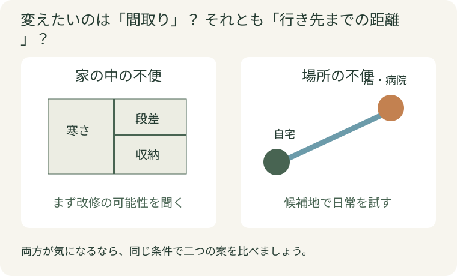
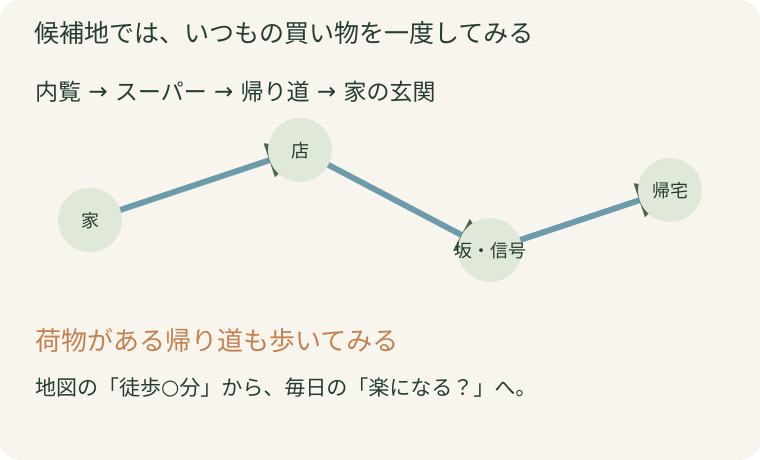
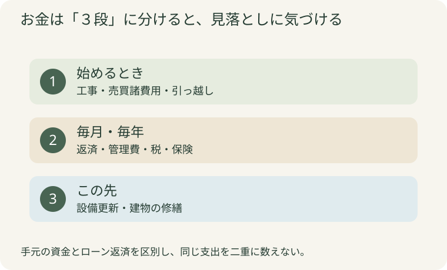

「この家を直して住み続けるか、便利な場所へ引っ越すか」。見積書や物件情報を眺めるほど、決められなくなることがあります。
そんなときは、いったん価格から離れて、いまの暮らしで一番困ることを考えてみてください。冬のお風呂が寒いのか、買い物に行くのが大変なのか。この違いで、先に調べたいことが変わります。
リフォームで変えやすいのは、家の中の使い勝手。一方、駅や病院までの距離は、家をどれだけ直しても変わりません。今回は、この二つを分けてから、費用と日々の暮らしを比べる方法を紹介します。
決め手は家の新しさより「何を変えたいか」。迷いを整理する３つの比べ方
公開日：
 文｜エイスケ（住宅と教育の専門家）
文｜エイスケ（住宅と教育の専門家）

「この家を直して住み続けるか、便利な場所へ引っ越すか」。見積書や物件情報を眺めるほど、決められなくなることがあります。
そんなときは、いったん価格から離れて、いまの暮らしで一番困ることを考えてみてください。冬のお風呂が寒いのか、買い物に行くのが大変なのか。この違いで、先に調べたいことが変わります。
リフォームで変えやすいのは、家の中の使い勝手。一方、駅や病院までの距離は、家をどれだけ直しても変わりません。今回は、この二つを分けてから、費用と日々の暮らしを比べる方法を紹介します。
まず、解消したい不便を三つ書いてください。「築年数が古い」のような家の評価より、「冬は脱衣所が寒い」「階段の掃除がつらい」のような生活の場面にすると整理しやすくなります。
| 困りごとの例 | 最初に確かめたいこと |
|---|---|
| お風呂が寒い、段差が気になる、収納が使いにくい | 今の家でどこまで改修できるか |
| 買い物や通院が遠い、坂道がつらい、家族と行き来しにくい | 候補地なら移動の負担が減るか |
| 家が広すぎる、２階をほとんど使わない | １階中心の暮らしに改修できるか、小さな家へ移る方がよいか |
今の地域での暮らしが気に入っていて、不便が室内に集中しているなら、まずリフォームの可能性を調べる価値があります。反対に、車がないと生活しづらいことが一番の悩みなら、住み替え先の立地から考えましょう。

「ここに寝室をつくれば、１階だけで暮らせそう」。こうした希望は、間取り図を見ながら相談すると進みます。ただし、水まわりの移動や壁の撤去は、構造や配管によってできる範囲が変わります。
今の家の図面、過去の工事記録、気になる箇所の写真を用意し、リフォーム会社に次の三つを聞いてみてください。
きれいな内装にする費用だけでなく、住み続けるために必要な補修も含めて考えるのがポイントです。「全面改修」と「生活する場所を絞った改修」の二案を相談すると、予算の使いどころが見えやすくなります。
マンションでは、窓や配管など自由に変更できない部分もあります。管理規約や申請の確認を、設計と同時に進めましょう。
駅から近い、部屋が新しい。その魅力に加えて、普段の一日が楽になるかも確かめたいところです。
おすすめは、内覧のついでに候補の家からスーパーまで歩いてみること。坂道、信号、歩道、帰りの荷物を持った道のりが分かります。病院やバス停までの経路も、地図の距離だけでは見えないことがあります。
チェックしたいのは、次の四つです。
中古住宅なら、見た目とは別に建物の状態も調べます。既存住宅状況調査を利用する場合は、対象になる部分とならない部分を確認し、耐震性など気になることは別途相談してください。

リフォームの見積が出ると、売りに出ている物件価格と比べたくなります。でも、住み替えには購入以外の出費があり、住み続ける場合にも今後の補修があります。
| 比べるお金 | リフォームして住み続ける | 住み替える |
|---|---|---|
| ①始めるとき | 工事、仮住まい、荷物移動など | 購入・賃貸の初期費用、売却・購入の諸費用、引っ越し、必要な改修など |
| ②毎月・毎年 | ローン返済、固定資産税、保険など | 家賃・ローン、管理費・修繕積立金、税・保険など |
| ③この先の備え | 屋根・外壁・設備などの補修 | 専有部分の設備更新、修繕積立金の見直しなど |
まず①の見積をそろえ、②を比べ、③にどんな出費がありそうかを聞きましょう。現金で払う部分とローンで払う部分を分けると、二重に数えるのを防げます。
今の家を売る予定なら、売却代金をそのまま使えるとは限りません。ローンの残債や売却の諸費用を差し引き、手元に残る見込み額を不動産会社や金融機関に確認します。「買い手が見つかる前に次の家を買う場合、支払いをどうするか」も、契約前に相談したい点です。

一人は住み慣れた地域を大事にし、もう一人は家の手入れを減らしたい。意見が違うときは、どちらが正しいかより、何を守りたいかを言葉にしてみましょう。
次の三行を、それぞれ書く方法がおすすめです。
残したいこと：＿＿＿＿
一番解消したいこと：＿＿＿＿
新しい暮らしでやってみたいこと：＿＿＿＿
「今の家か別の家か」という二択の前に、１階だけ改修する、近所の小さな住まいを探すなど、両方の希望をかなえる案が見つかることもあります。
残したい暮らし：＿＿＿
一番解消したい不便：＿＿＿
今の家／候補地で確かめること：＿＿＿
築年数だけで決めず、建物の傷みと希望する改修の費用を確認しましょう。立地が気に入っているなら、調べる前に候補から外す必要はありません。
共用部分は管理組合で計画しますが、管理費や修繕積立金がかかり、専有部分の設備更新も必要です。購入前に長期修繕計画や積立金の状況を確認しましょう。
「住み続ける案と住み替える案を比較中」と伝えて大丈夫です。希望と予算を伝え、調査や見積が有料かどうかも最初に確認しましょう。
「10年後もこの地域で続けたいことは何？」。買い物の便利さと同じように、近所のつながりや楽しみも、住まいを選ぶ大切な条件です。
動線まわりの改修(段差・階段・水まわり)、断熱改修、水まわり設備
部屋・建材・設備から機能を確かめる ↗関連記事
この記事を書いた人｜エイスケ
1986年生まれ。実家の工務店・不動産に10年間従事したのち、教育の世界へ。住宅と教育、両方の視点から「豊かな暮らし」をテーマに執筆します。※本コラムは筆者個人の見解・経験に基づくものです。最終的な判断は各分野の専門家にご相談ください。